Churn prediction using Spark
A fun churn project in Spark
You can find the original blog post in Medium here
Project description
The following project tries to predict user churn rate in a fictitious music streaming service called Sparkify.
I used Spark in Amazon Web Services (AWS) with an Elastic Map Reduce (EMR) cluster of 3 m5.xlarge machines. One driver and two workers. The dataset size is 12 Gbytes and was read from an AWS Simple Storage Service (S3) bucket in JSON format. This file contains activity registered from users as they used the service daily.
As software libraries go I have used: PySpark, Python’s Spark API. AWS EMR version 5.29.0. Logistic Regression, Random Forest, Gradient Boost Trees (GBT) Classifier, and Naive Bayes form Spark’s Machine Learning Library. Pandas and Matplotlib from the standard data science Python stack.
Business understanding
Churn prediction is an important classification use case for banks, insurance companies, telcos, cable TV operators, and streaming services such as Netflix, Hulu, Spotify, and Apple Music. Companies that can predict customers who are more likely to cancel the subscription to their service can implement a more effective customer retention strategy.
Customer churn costs companies approximately $136 billion per year according to a study done by a leading customer engagement analytics firm 1.
Research done by Bain & Company shows increasing customer retention rates by just 5% increases profits by 25% to 95% 2.
The justification for spending resources in churn reduction is based on a study made by Lee Resource Inc. where they show that attracting new customers can cost a company five times more than keeping an existing one! 3.
Data understanding
The dataset has a total of 543,705 rows and 18 columns. The schema is the following:
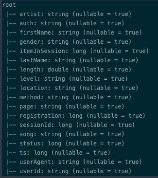
We have a total of 22 unique entries in the page category.
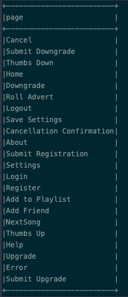
I defined a new column called churn that consists of any of Cancellation Confirmation or Submit Downgrade events as a confirmation of a user that has left the service or stop paying for it (free subscription). The distribution of hits per page is:
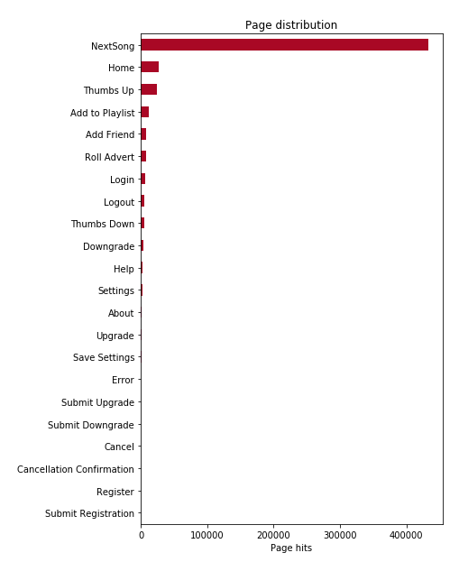
We can see that NextSong page is accessed a lot, which makes sense as it indicates users are listening to songs. Next, is Home followed by three that indicate interaction with the service: Thumbs Up, Add to Playlist and, Add Friend. These three indicate a positive experience with the service. On the other hand, we have Roll Advert, Thumbs Down and, Error as possible indicators of a bad experience for users with the service.
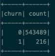
As we can see from the summary, we are facing a very unbalanced dataset. The ratio of no-churn (0) and churn (1) is 2,516.
There is a total of 225,393 female and 302,612 male users with 15,700 users not revealing their gender that I have categorized as U (Unavailable):
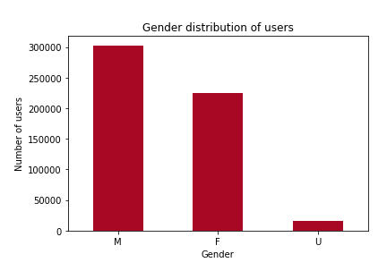
We have a total of 428,597 paid users and 115,108 users in the free plan/service. As we have stated before we have to make sure that we keep these paid subscribers as much as we can to maximize the revenue (or minimize the loss).
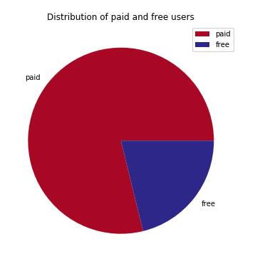
Data preparation
The first thing I tackled was to solve the unbalance issue. I used a technique called over-sampling. It is a very basic method where I took advantage of PySpark’s explode dataframe feature to select as many events from the underrepresented class (churn equals 1 in this case) to fill in the difference until I got a balanced data set to work with.
There are more advanced methods that I read about it but they are mostly built for Pandas/Numpy dataframes/sets and did not parallelize well in my Spark environment. This definitively needed more time and investigation to find a more robust solution. The most promising method I learned is SMOTE where interested readers can find more details here and here.
After applying this technique I have expanded and balanced the dataframe augmenting it ~50%:
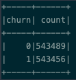
Going from a total of 543,705 entries to a total of 1,086,945. This proved very useful as my model’s accuracy improved and I reduced significantly the overfit problems I faced without it. Even though it is not perfect and can be improved further.
The userAgent provides some information I build two features that I used: os and browser.
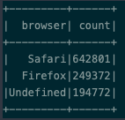
From the browser, we can see that 642,801 use Safari and 249,372 use Firefox.
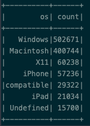
Windows is the more used operating system followed by Macintosh and X11 (Linux). iPhone is the 4th more used and compatible maybe means Android?
I used the ts (timestamp) column to build more features. From the ts I constructed the day_of_week and hour column.
Using these new columns we can see that users tend to listen to more songs towards the end of the day. Users start listening after lunch, peaking at 4–5 PM (during the commute drive?).
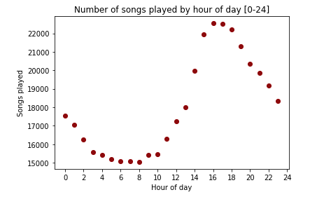
Users listen to songs more during weekdays too. Thursday seems to be the day that stands out but not by much to make conclusions.
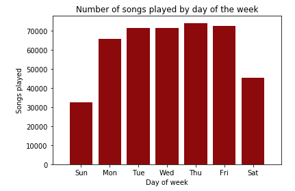
I have constructed the following features:
- saved_settings Count of all ‘Save Settings’ page event grouped by ‘userId’
- num_songs Count of number of ‘song’ played by users (grouped by ‘userId’)
- thumbs_up Count of all ‘Thumbs Up’ page event grouped by ‘userId’
- num_advertisement Count of all ‘Roll Advert’ page event grouped by ‘userId’
- thumbs_down Count of all ‘Thumbs Down’ page event grouped by ‘userId’
- playlist_added Count of all ‘Add to Playlist’ page event grouped by ‘userId’
- friend_added Count of all ‘Add Friend’ page event grouped by ‘userId’
- errors_pages Count of all ‘Error’ page event grouped by ‘userId’
- songs_persession Average songs (by ‘Next Song’ page event) played by users (grouped by ‘userId’) on a given session (‘sessionId’)
I have used StringIndexer, VectorAssembler and, Normalizer from PySpark ML feature’s library. StringIndexer encodes a string column of labels to a column of label indices. VectorAssembler which is a transformer combines a given list of columns/features into a single vector column as required by the ML algorithms. Finally, a Normalizer is a Transformer that transforms a dataset of Vector rows, normalizing each Vector to have unit norm. It takes parameter p, which specifies the p-norm used for normalization. (p=2 by default.) This normalization can help standardize your input data and improve the behavior of learning algorithms.
Modeling
I have split the dataset in training and testing sets with an 80–20 percent split respectively to move to the modeling phase.
For modeling, I used Logistic Regression, Random Forest Classifier, GBT Classifier, and Naive Bayes algorithms from the Spark ML library. I measured the best performer, using the F-1 score metric as a parameter for all of them to select the best and fine-tune it.
F-1 score makes more sense for our churn rate prediction model because we are more interested in the False Negatives and False Positives. The first one because it indicates that we predicted users not leaving that did churn. The second one indicates users we predict leaving that did not leave. With the above, I am not saying that True Negative (predicted users not leaving who leave the service) is not important too!
Model selection
I trained Logistic Regression, Random Forest Classifier, GBT Classifier, and Naive Bayes algorithms with the default parameters on the ‘train’ dataset and evaluated it with the ‘test’ dataset.
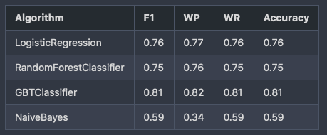
Where:
- F1 - F-1 score
- WP - Weighted Precision
- WR - Weighted Recall
Best model selection
From Figure 1.1 we can see that the best performing model is GBTClassifier. I fine-tuned this model running a Cross-Validation with 5 folds and a parameter grid as follows:
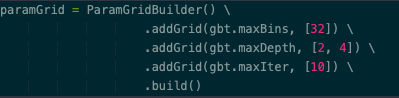
I evaluated the model with the same metrics as before obtaining the following values:
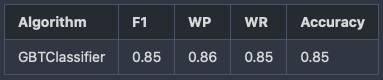
Conclusion
As we can see this fine-tuned model provides a 4% increase in all metrics from the previous run and almost a 10% increase compared to the other models!
Our model predicted 46,435 users leaving who did leave (True Positive) and 58,499 users not leaving who leave the service (True Negative). The model also predicted 13,790 users leaving who did not leave (False Positive) and 4,047 users not leaving who did leave (False Negative).
Our model though is far from perfect. With a precision of only 77% and a recall of 92% means we predict accurately 2/3 of the churn cases correctly.
GBTClassifier was the best of all the algorithms I tried in this project and also was the one that took longer to train as it trains one tree after the other. I had issues in the performance of the EMR cluster and had to do some configurations to be successful in training all these models in Spark. For all these details please head to my GitHub repository.
As I mentioned before there is plenty of room to improve the over/under-sample of this imbalanced dataset. If time and budget permits a more broad grid search can be performed with more hyperparameters than I used here to improve the model performance but that will require, time and budget as EMR is not a free service.